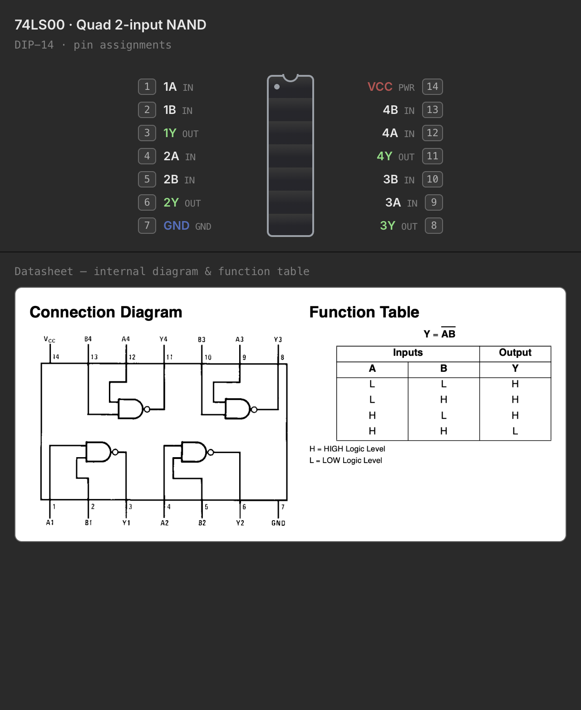

The 74xx Chip Library
The parts palette's CHIPS folder holds a broad shelf of 74xx-family DIP logic — everything from a single quad NAND gate up to octal shift registers and 4-bit counters — every one with a datasheet-accurate pinout and, where the simulator supports it, real behavior you can wire up and run. A separate Memory group sits alongside it for address-indexed ROM/RAM parts, which get their own dedicated page. This page is a tour of what's on the shelf and how to read a chip's pin-assignments window once you've placed one.
Combinational gates
The basic gate families — the classic 7400-series building blocks:
| Part | Description |
|---|---|
74LS00 |
Quad 2-input NAND |
74LS02 |
Quad 2-input NOR |
74LS08 |
Quad 2-input AND |
74LS10 |
Triple 3-input NAND |
74LS11 |
Triple 3-input AND |
74LS20 |
Dual 4-input NAND |
74LS27 |
Triple 3-input NOR |
74LS30 |
8-input NAND |
74LS32 |
Quad 2-input OR |
74LS86 |
Quad 2-input XOR |
Alongside them, the inverter and buffer/bus-driver parts:
| Part | Description |
|---|---|
74LS04 |
Hex inverter |
74LS05 |
Hex inverter, open-collector |
74LS14 |
Hex Schmitt-trigger inverter |
74LS125 |
Quad tri-state buffer, active-low enable per gate |
74LS240 |
Octal inverting tri-state buffer/line driver |
74LS244 |
Octal (non-inverting) tri-state buffer/line driver |
74LS245 |
Octal bidirectional bus transceiver — the one part in the catalog with true bidirectional pins |
Sequential & MSI parts
Everything with internal state, plus the mid-scale-integration decoders and multiplexers that build address/data logic around them.
Flip-flops & latches
| Part | Description |
|---|---|
74LS73 |
Dual JK flip-flop, clear |
74LS74 |
Dual D flip-flop, preset & clear |
74LS76 |
Dual JK flip-flop, preset & clear |
74LS107 |
Dual JK flip-flop, clear |
74LS112 |
Dual JK flip-flop, preset & clear |
74LS174 |
Hex D flip-flop |
74LS175 |
Quad D flip-flop |
74LS173 |
4-bit D register, tri-state |
74LS273 |
Octal D flip-flop, clear |
74LS75 |
4-bit bistable (transparent) latch |
74LS279 |
Quad S̄R̄ latch |
74LS259 |
8-bit addressable latch |
74LS533 / 74LS573 |
Octal transparent latch, tri-state (inverting / non-inverting) |
The 74LS73, 74LS75, and 74LS76 reproduce their datasheet's
non-standard power-pin placement — real parts don't always put VCC and
GND on the package corners, and neither do these.
Counters & shift registers
| Part | Description |
|---|---|
74LS90 |
Decade (÷10) ripple counter |
74LS161 |
Synchronous 4-bit binary counter |
74LS169 |
Synchronous 4-bit up/down counter |
74LS193 |
Synchronous up/down 4-bit counter |
74LS164 |
8-bit serial-in, parallel-out shift register |
74LS165 |
8-bit parallel-in, serial-out shift register |
74LS595 |
8-bit shift register with output storage latch |
Decoders & multiplexers
| Part | Description |
|---|---|
74LS138 |
3-to-8 line decoder |
74LS139 |
Dual 2-to-4 line decoder |
74LS151 |
8-to-1 line multiplexer |
74LS153 |
Dual 4-to-1 multiplexer |
74LS157 |
Quad 2-to-1 selector |
74LS257 |
Quad 2-to-1 selector, tri-state |
Arithmetic, comparison & encoding
| Part | Description |
|---|---|
74LS47 |
BCD-to-7-segment decoder/driver |
74LS85 |
4-bit magnitude comparator |
74LS148 |
8-to-3 priority encoder |
74LS283 |
4-bit binary full adder |
Memory chips
The Memory group carries the address-indexed parts: a couple of generic teaching ROM/SRAM chips plus real-shaped EEPROM/EPROM/SRAM parts on wider DIP packages. Reads and writes are wired up the same way as every other chip in the catalog, but a non-volatile chip's contents live in a real file on disk and are programmed through a dedicated in-app tool rather than by the circuit itself. See Memory Chips & the Inspector for the full story — file-backing, the external programmer, and the hex/ASCII inspector.
The sim-ready badge
Every chip in the palette that has real behavior wired up — its truth table or state machine, not just its pinout — carries a small sim badge next to its name. Hover it for a reminder: "Behavior defined — ready for the simulator." In practice this covers the whole 74xx shelf on this page; you'll only ever see a chip without the badge if a future part ships with a pinout but no behavior yet.
The pin-assignments window
Double-click any chip — or a package-footprint discrete like the bar8iso
LED bar, which seats and rotates exactly like a DIP chip even though it isn't
one — to open its pin-assignments window: a small, floating window
separate from the main desk, showing the physical DIP layout with the notch
at the top, pin 1 at the top-left, and pin numbers wrapping down the left side
and back up the right to the highest pin at the top-right, exactly as printed
on the part.

For a real chip this layout is always the canonical, fixed arrangement —
it matches the physical part regardless of how you've flipped it on the desk,
because a real chip's pin-1 dot is a physical feature of the package, not
something rotation changes. bar8iso is the one exception: it has no real
notch to key off, so its pin-assignments window reflects its current R
flip on the desk — rotate it and the corners in the dialog swap to match.
Below the pin map, chips that have one show the manufacturer's datasheet crop — a cropped image of the connection diagram or function table pulled straight from the source datasheet PDF. If a chip has no crop on file, that part of the window simply isn't there — the pin map alone is still complete and accurate.
When Settings → Data Sheets points at a local folder containing that chip's full datasheet PDF, the window also grows a small document button in its top-right corner; clicking it opens the PDF itself in your system's PDF viewer. This is independent of the built-in datasheet crop — you may have one, both, or neither for any given chip.
Datasheets
The datasheet crops shown in the pin-assignments window are committed image
assets built once from the manufacturer PDFs (make datasheets), not
fetched or rendered at runtime — they work offline and load instantly. Four
parts in the sequential/MSI wave have no matching 74LS* datasheet on file
(74LS164, 74LS193, 74LS27, 74LS76) and simply show their pin map with
no crop below it. Pointing Settings → Data Sheets at your own folder of
manufacturer PDFs is a separate, optional feature — it doesn't add or replace
the built-in crops, it just adds the "open datasheet PDF" button for any part
whose PDF you have on hand.
See also Chips & Components for how chips seat into a breadboard, and Memory Chips & the Inspector for the memory group's file-backing and inspector.